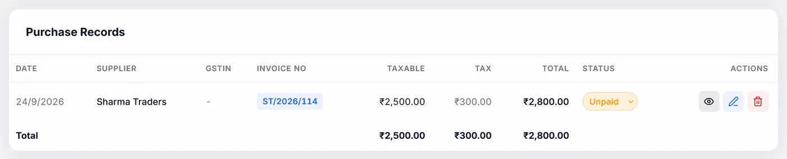

Purchase bills
Record every supplier bill, so the GST you paid comes back as input tax credit and your stock stays right. Includes reading a bill from a photo.
#The purchase list
At the top, Total Purchases, GST (ITC Eligible) and Entries add up what is shown. Search by supplier, invoice number or GSTIN, and pick a financial year (one of the last five) or All years.
The table shows date, supplier, GSTIN, invoice number, taxable value, tax, total, status and actions, with totals at the bottom. Each row has:
- the eye, to view the bill without downloading anything;
- the pencil, to edit it;
- the bin, to delete it.
The view has Download PDF.
#Adding a purchase bill
Add Purchase opens the form:
| Field | What to know |
|---|---|
| Date | Today to start |
| Payment Status | Unpaid, Paid or Partial |
| Supplier Name | Required. Suppliers you have used before are suggested; picking one fills in their GSTIN, address and whether they are in another state. |
| Supplier GSTIN | 15 characters |
| Supplier Address | Optional. Printed on the purchase bill PDF. |
| Invoice Number | Required. The supplier's invoice number. |
| Note | Optional |
| Inter-state purchase | See Suppliers in another state |
Each item row has Name, HSN, Qty, Rate, Tax % (0, 0.1, 0.25, 3, 5, 12, 18 or 28, or Other… for any rate) and Cess %. Typing a name suggests your products and items from earlier bills, and fills in the HSN, rate and tax you used before. Clicking Qty, Rate or Cess selects what is in it, so typing replaces it.
A bill needs a supplier name, an invoice number, and at least one item with a quantity and rate.
#Round-off
If the supplier rounded their total to the rupee, tick Apply round-off so yours matches, for example ₹1,234.56 becomes ₹1,235. It is off to start, since most bills already match the line items.
#Suppliers in another state
If the supplier charged IGST because they are in a different state, the bill is Inter-state purchase, and the credit goes to IGST in GSTR-3B rather than CGST and SGST. The box ticks itself when you type the supplier's full GSTIN: its first two digits are their state code, compared with your business's. You can still change it for the rare exception.
#Paying suppliers
Change a bill's status straight from the coloured Status dropdown in the list: Unpaid in amber, Paid in green, Partial in purple.

#What saving does to your products
Each item on the bill is matched to your products by name:
- A product you already have: its stock goes up by the quantity, and its purchase price is updated. When you edit a bill, only the difference is added, and a row you remove is taken back out.
- A new item: it is added to your products, with the rate as both purchase and selling price, and the quantity as its stock. Check its selling price afterwards.
- Deleting a bill takes its quantities back out of stock.
#Reading a bill from a photo
- Open itClick Import from image (OCR).
- Choose the pictureClick or drag a photo or scan of the bill: PNG, JPG or WebP, up to 8 MB. PDFs are not accepted; take a screenshot of the page instead.
- Read itClick Extract fields. It takes a few seconds, with a percentage showing progress.
- Check everythingThe supplier, GSTIN, invoice number, date and grand total are filled in, with the line items it could read: name, HSN, quantity, rate and GST rate. Items that match your saved products take your stored HSN and GST rate. Fix anything wrong, add or remove rows.
- Use itUse these values opens the purchase form with it all filled in. Check it once more and save.
Everything is read on your computer, in English, with no internet needed and nothing uploaded. Sharp, straight, well-lit photos read best. If no items are found but a total is, one line with the total is added, for you to split into the real items.
The purchase form does not take the tax breakdown or grand total from the photo: it works them out from the items, so check they match the bill. Tick Inter-state purchase yourself if the bill shows IGST.
#For your accountant
Print / PDF, Excel and CSV above the list give the purchase register for the current search and year, oldest first, with a total row: date, supplier, GSTIN, invoice number, taxable amount, tax, cess, inter-state, round-off, total, status and note.
#Importing purchase bills from CSV
- Open itClick CSV import / export at the top of Purchases.
- Start from the templateTemplate downloads a CSV with the right columns and an example. Fill it in with Excel or Google Sheets and save it as CSV. Export all as CSV gives what you already have, in the same columns.
- Choose the fileChoose CSV file shows what will happen before anything is saved: how many are ready, which already exist and are skipped, and every row with a problem (a bad date, a missing rate). Rows with problems are not imported; fix the file and choose it again.
- ImportClick Import. A message says how many were imported and skipped.
One row per item. Rows with the same supplier and invoice number make one bill. Columns: Invoice Number, Invoice Date, Supplier Name, Supplier GSTIN, Supplier Address, Item Name, HSN/SAC, Quantity, Rate, GST %, Cess %, Inter-state, Payment Status (Unpaid, Partial or Paid) and Note.
A bill already entered (same supplier and number, matched by GSTIN or by name) is skipped. If Inter-state is blank, it is worked out from the supplier's GSTIN. Quantities are added to product stock, as when you type a bill in.
#"Not assigned to a business"
If you have more than one business, bills saved before you started keeping them separate show under all of them, with a banner. Assign to moves them all to the business now selected. Only do this if they belong to it. The same banner appears on Expenses, Recurring and Receipts.